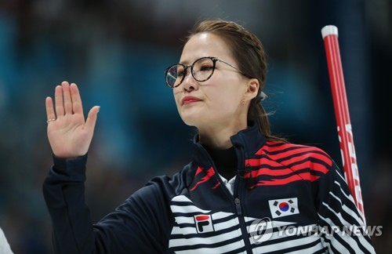

 (서울=연합뉴스) 최인영 기자 = 2018 평창동계올림픽 은메달로 '스타덤'에 올라 바쁜 일정을 보냈던 여자컬링 대표팀이 세계선수권대회에서 쾌조의 경기력을 이어가고 있다. 여자컬링 대표팀은 21일(한국시간) 캐나다 온타리오 주 노스베이에서 열린 2018 세계여자컬링선수권대회 예선 6차전에서 중국을 12-3으로 완파했다.
5승 1패를 올린 대표팀은 13개 출전팀 중 단독 3위를 달렸다. 무패 행진 중인 스웨덴(7승)과 캐나다(6승)를 뒤쫓고 있다. 김은정 스킵은 세계컬링연맹(WCF) 인터뷰에서 "올림픽 후 우리는 바빴고, 그래서 조금 피곤했다"면서 "이 대회에 온 뒤 두 번째 경기가 끝나니까 좋은 컨디션을 되찾은 느낌이 들었다"고 말했다. 김은정 스킵과 리드 김영미, 세컨드 김선영, 서드 김경애, 후보 김초희와 김민정 감독까지 모두 김 씨인 '팀 킴' 대표팀은 평창올림픽에서 한국 컬링 사상 최초로 은메달을 획득해 컬링 열풍을 일으켰다. 높아진 인기에 각종 방송 출연과 광고 촬영, 행사 참석 등 바쁜 일정을 소화하느라 세계선수권대회를 제대로 준비할 수 없었다. 이들은 편안한 마음으로 임하겠다면서도 높아진 기대에 부응해야 한다는 책임감을 안고 이번 대회에 출전했다. 하지만 걱정과 달리 대표팀은 빠르게 경기 감각을 되찾았다. 평창올림픽 금메달 팀인 스웨덴에만 패하고 독일, 체코, 덴마크, 이탈리아, 중국을 꺾고 상위권에 자리했다. 중국전에서 대표팀은 1엔드부터 5점을 대량 획득하며 확실하게 기선을 제압했고 2엔드에는 3점을 스틸(선공 팀이 득점)하면서 사실상 승기를 잡았다. 김은정은 1엔드 대량 득점 후 집중력을 잃을까 봐 걱정했었다고 털어놨다. 그러나 "2엔드에서 우리는 집중력을 유지했다"며 자부심을 보였다. 대표팀은 한국시간으로 이날 오후 10시 미국과 예선 7차전을 벌인다.